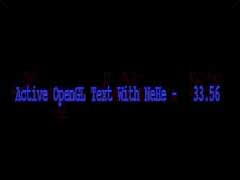

|
第13課 |
 |
|  |
圖像字體:
這一課我們將創建一些基於2D圖像的字體，它們可以縮放，但不能旋轉，並且總是面向前方，但作為基本的顯示來說，我想已經夠了。 |
|
 |
|
歡迎來到另一課教程，這次我將教你如何使用位圖字體，也許你會對自己說：「在屏幕上顯示文字有什麼難的？」。但是你真正嘗試過就會知道，它確實沒那麼容易。
當然，你可以載入一段美術程序，把文字寫在一個圖片上，再把這幅圖片載入你的OpenGL程序中，打開混合選項，從而在屏幕上顯示出文字。但是這種做法非常耗時。而且根據你選擇的濾波類型，最終結果常常會顯得很模糊，或者有很多馬賽克。另外，除非你的圖像包含一個Alpha通道，否則一旦繪製在屏幕上，那些文字就會不透明（與屏幕中的其它物體混合）。
如果你使用過記事本、微軟的Word或者其它文字處理軟件，你會注意到所有不同的字體都是可用的。這課就會教你如何在自己的OpenGL程序中使用和原樣相同的字體。事實上，任何安裝在你的計算機中的字體都可以使用在演示中（中文不行）。
使用位圖字體比起使用圖形字體（貼圖）看起來不止強100倍。你可以隨時改變顯示在屏幕上的文字，而且用不著為它們逐個製作貼圖。只需要將文字定位，再使用我最新的gl命令就可以在屏幕上顯示文字了。
我盡可能試著將命令做的簡單。你只需要敲入glPrint("Hello") 。它是那麼簡單。不管怎樣，從這段長長的介紹就可以看出，我對這課教程是多麼的滿意。寫這段代碼大概花了我一個半小時，為什麼這麼長的時間呢？那是因為在使用位圖字體方面完全沒有可用的資料，除非你願意使用MFC中的代碼。為了使代碼簡單，我想，如果我把它全部重寫為容易理解的C語言代碼，那一定會好些
:)
一個小註釋，這段代碼是專門針對Windows寫的，它使用了Windows的wgl函數來創建字體，顯然，Apple機系統有agl，X系統有glx來支持做同樣事情的，不幸的是，我不能保證這些代碼也是容易使用的。如果那位有能在屏幕上顯示文字且獨立於平台的代碼，請告訴我，我將重寫一個有關字體的教程。
我們從第一課的典型代碼開始，添加上stdio.h頭文件以便進行標準輸入/輸出操作，另外，stdarg.h頭文件用來解析文字以及把變量轉換為文字。最後加上math.h頭文件，這樣我們就可以使用SIN和COS函數在屏幕中移動文字了。
|
|
#include <stdarg.h> // 用來定義可變參數的頭文件
|
另外，我們還要添加3個變量。base將保存我們創建的第一個顯示列表的編號。每個字符都需要有自己的顯示列表。例如，字符『A』在顯示列表中是65，『B』是66，『C』是67，等等。所以，字符『A』應保存在顯示列表中的base
+ 65這個位置。
然後添加兩個計數器（cnt1 和 cnt2），它們採用不用的累加速度，通過SIN和COS函數來改變文字在屏幕上的位置。在屏幕上創造出一種看起來像是半隨機的移動方式。同時，我們用這兩個計數器來改變文字的顏色（後面會進一步解釋）。
|
|
GLuint base; // 繪製字體的顯示列表的開始位置
GLfloat cnt1; // 字體移動計數器1
GLfloat cnt2; // 字體移動計數器2
|
下面這段代碼用來構建真實的字體，這也是最難寫的一部分代碼。『HFONT font』告訴Windows我們將要使用一個Windows字體。Oldfont用來存放字體。
接下來我們在定義base的同時使用glGenLists(96)創建了一組共96個顯示列表。
|
|
GLvoid BuildFont(GLvoid) // 創建位圖字體
{
HFONT font; // 字體句柄
HFONT oldfont; // 舊的字體句柄
base = glGenLists(96); // 創建96個顯示列表
|
下面該有趣的部分了，我們將創建屬於自己的字體。我們從指定字體的大小開始，你會注意到它是一個負數，我們通過加上一個負號來告訴Windows尋找一個基於CHARACTER高度的字體。如果我們使用一個正數，就是尋找一個與基於CELL的高度相匹配的字體。
|
|
font = CreateFont( -24, // 字體高度
|
然後我們指定每個單元的寬度，你會注意到我把它定義為0，這樣，Windows就會使用默認值。如果你願意的話，可以改變它的值，比如更寬一點，等等。 |
|
0, // 字體寬度
|
Angle Of Escapement會將字體旋轉，它不是一個常用的屬性，除了0，90，180，270四個角度以外，由於字體本身要適應其看不見的方形邊框，常常會顯的裁切不正。MSDN幫助中解釋Orientation
Angle用於指定每個字的底邊和顯示設備的X軸之間的角度，每個單位是十分之一個角度，不幸的是我對這個沒有概念。
|
|
0, // 字體的旋轉角度 Angle Of Escapement
0, // 字體底線的旋轉角度Orientation Angle
|
字體重量是一個很重要的參數，你可以設置一個0–1000之間的值或使用一個已定義的值。FW_DONTCARE是0,
FW_NORMAL是400, FW_BOLD是700 and FW_BLACK是900。還有許多預先定義的值，但是這四個的效果比較好。值越大，字體就越粗。
|
|
FW_BOLD, // 字體的重量
|
Italic(斜體),Underline(下劃線)和Strikeout（刪除線）可以是TRUE或FALSE。如果將Underline設置為TRUE，那麼字體就會帶有下劃線，否則就沒有，非常簡單。
|
|
FALSE, // 是否使用斜體
FALSE, // 是否使用下劃線
FALSE, // 是否使用刪除線
|
Character Set Identifier（字符集標識符）用來描述你要使用的字符集（內碼）類型。有太多需要說明的類型了。CHINESEBIG5_CHARSET，GREEK_CHARSET，RUSSIAN_CHARSET，DEFAULT_CHARSET
,等等。我使用的是ANSI，儘管DEFAULT也是很好用的。
如果你有興趣使用Webdings或Wingdings等字體，你必須使用SYMBOL_CHARSET而不是ANSI_CHARSET。 |
|
ANSI_CHARSET, // 設置字符集
|
Output Precision（輸出精度）非常重要。它告訴Windows在有多種字符集的情況下使用哪類字符集。OUT_TT_PRECIS告訴Windows如果一個名字對應多種不同的選擇字體，那麼選擇字體的TRUETYPE類型。Truetype字體通常看起來要好些，尤其是你把它們放大的時候。你也可以使用OUT_TT_ONLY_PRECIS，它將會一直嘗試使用一種TRUETYPE類型的字體
|
|
OUT_TT_PRECIS, // 輸出精度
|
裁剪精度是一種當字體落在裁剪範圍之外時使用的剪輯類型，不用多說，只要把它設置為DEFAULT就可以了。
|
|
CLIP_DEFAULT_PRECIS, // 裁剪精度
|
輸出質量非常重要。你可以使用PROOF，DRAFT，NONANTIALIASED，DEFAULT或ANTIALISED。
我們都知道，ANTIALIASED字體看起來很好，將一種字體Antialiasing(反鋸齒)可以實現在Windows下打開字體平滑時同樣的效果，它使任何東西看起來都要少些鋸齒，也就是更平滑。 |
|
ANTIALIASED_QUALITY, // 輸出質量
|
下面是Family和Pitch設置。Pitch屬性有DEFAULT_PITCH，FIXED_PITCH和VARIABLE_PITCH，Family有FF_DECORATIVE,FF_MODERN,FF_ROMAN,FF_SCRIPT,FF_SWISS,FF_DONTCARE.嘗試一下這些值，你就會知道它們到底有什麼功能。我把它們都設置為默認值。
|
|
FF_DONTCARE|DEFAULT_PITCH, // Family And Pitch
|
最後，是我們需要的字體的確切的名字。打開Microsoft Word或其它什麼文字處理軟件，點擊字體下拉菜單，找一個你喜歡的字體。將『Courier
New』替換為你想用的字體的名字，你就可以使用它了。（中文還不行，需要別的方法）
|
|
"Courier New"); // 字體名稱
|
現在，選擇我們剛才創建的字體。Oldfont將指向被選擇的對象。然後我們從第32個字符（空格）開始建立96個顯示列表。如果你願意，也可以建立所有256個字符，只要確保使用glGenLists建立256個顯示列表就可以了。然後我們將oldfont對像指針選入hDC並且刪除font對象。 |
|
oldfont = (HFONT)SelectObject(hDC, font); // 選擇我們需要的字體
wglUseFontBitmaps(hDC, 32, 96, base); // 創建96個顯示列表，繪製從ASCII碼為32-128的字符
SelectObject(hDC, oldfont); // 選擇原來的字體
DeleteObject(font); // 刪除字體
}
|
接下來的代碼很簡單。它在內存中從base開始刪除96個顯示列表。我不知道Windows是否會做這些工作，但還是保險為好。
|
|
GLvoid KillFont(GLvoid) // 刪除顯示列表
{
glDeleteLists(base, 96); //刪除96個顯示列表
}
|
下面就是我優異的GL文字程序了。你可以通過調用glPrint(「需要寫的文字」)來調用這段代碼。文字被存儲在字符串
* fmt中。 |
|
GLvoid glPrint(const char *fmt, ...) // 自定義GL輸出字體函數
{
|
下面的第一行創建了一個大小為256個字符的字符數組，裡面保存我們想要的文字串。第二行創建了一個指向一個變量列表的指針。我們在傳遞字符串的同時也傳遞了這個變量列表。如果我們傳遞文本時也傳遞了變量，這個指針將指向它們。 |
|
char text[256]; // 保存文字串
va_list ap; // 指向一個變量列表的指針
|
下面兩行代碼檢查是否有需要顯示的內容，如果什麼也沒有，fmt就等於空（NULL），屏幕上也就什麼都沒有。
|
|
if (fmt == NULL) // 如果無輸入則返回
return;
|
接下來三行代碼將文字中的所有符號轉換為它們的字符編號。最後，文字和轉換的符號被存儲在一個叫做text的字符串中。以後我會多解釋一些有關字符的細節。
|
|
va_start(ap, fmt); // 分析可變參數
vsprintf(text, fmt, ap); // 把參數值寫入字符串
va_end(ap); // 結束分析
|
然後我們將GL_LIST_BIT壓入屬性堆棧，它會防止glListBase影響到我們的程序中的其它顯示列表。
GlListBase(base-32)是一條有些難解釋的命令。比如說要寫字母『A』，它的相應編號為65。如果沒有glListBase(base-32)命令，OpenGL就不知道到哪去找這個字母。它會在顯示列表中的第65個位置找它，但是，假如base的值等於1000，那麼『A』的實際存放位置就是1065了。所以通過base設置一個起點，OpenGL就知道到哪去找到正確的顯示列表了。減去32是因為我們沒有構造過前32個顯示列表，那麼就跳過它們好了。於是，我們不得不通過從base的值減去32來讓OpenGL知道這一點。我希望這些有意義。
|
|
glPushAttrib(GL_LIST_BIT); // 把顯示列表屬性壓入屬性堆棧
glListBase(base - 32); // 設置顯示列表的基礎值
|
現在OpenGL知道字母的存放位置了，我們就可以讓它在屏幕上顯示文字了。GlCallLists是一個很有趣的命令。它可以同時將多個顯示列表的內容顯示在屏幕上。
下面的代碼做後續工作。首先，它告訴OpenGL我們將要在屏幕上顯示出顯示列表中的內容。Strlen(text)函數用來計算我們將要顯示在屏幕上的文字的長度。然後，OpenGL需要知道我們允許發送給它的列表的最大值。我們不能發送長度大於255的字符串。這個字符列表的參數被當作一個無符號字符數組處理，它們的值都介於0到255之間。最後，我們通過傳遞text(它指向我們的字符串)來告訴OpenGL顯示的內容。
也許你想知道為什麼字符不會彼此重疊堆積在一起。那時因為每個字符的顯示列表都知道字符的右邊緣在那裡，在寫完一個字符後，OpenGL自動移動到剛寫過的字符的右邊，在寫下一個字或畫下一個物體時就會從GL移動到的最後的位置開始，也就是最後一個字符的右邊。
最後，我們將GL_LIST_BIT屬性彈出堆棧，將GL恢復到我們使用glListBase(base-32)設置base那時的狀態。
|
|
glCallLists(strlen(text), GL_UNSIGNED_BYTE, text); // 調用顯示列表繪製字符串
glPopAttrib(); // 彈出屬性堆棧
}
|
在初始化代碼中唯一的變化就是BuildFont()。它調用前面的代碼來創建字體，然後OpenGL就可以使用這個字體了。 |
|
BuildFont(); // 創建字體
|
下面就是畫圖的代碼了。我們從清除屏幕和深度緩存開始。我們調用glLoadIdentity()來重置所有東西。然後我們將坐標系向屏幕裡移動一個單位。如果不移動的話無法顯示出文字。當你使用透視投影而不是ortho投影的時候位圖字體表現的更好。由於ortho看起來不好，所以我用透視投影，並移動坐標系。。
你會注意到如果把坐標繫在屏幕裡放的更深遠，字體並不會想你想像的那樣縮小，只是你可以在控制文字位置時有更多的選擇。如果你將坐標系移入屏幕一個單位，你就可以字X軸上-0.5到+0.5的範圍內調整文字的位置。如果深入10個單位的話，移動範圍就從-5到+5。它給了你更多的選擇來替代使用小數指定文字的精確位置。什麼都不能改變文字的大小，即使是調用glScale(x,y,z)函數.如果你想改變字體的大小，只能在創建它的時候改變它。
|
|
int DrawGLScene(GLvoid) // 此過程中包括所有的繪製代碼
{
glClear(GL_COLOR_BUFFER_BIT | GL_DEPTH_BUFFER_BIT); // 清除屏幕及深度緩存
glLoadIdentity(); // 重置當前的模型觀察矩陣
glTranslatef(0.0f,0.0f,-1.0f); // 移入屏幕一個單位
|
下面我們使用一些奇妙的數學方法來產生顏色變化脈衝。如果你不懂我在做什麼你也不必擔心。我喜歡利用教多的變量和教簡單的方法來達到我的目的。
這樣，我使用那兩個用來改變文字在屏幕上位置的計數器來改變紅、綠、藍這些顏色。紅色值使用COS和計數器1在-1.0到1.0之間變化。綠色值使用SIN和計數器2也在-1.0到1.0之間變化。藍色值使用COS和計數器1和2在0.5到1.5之間變化。於是，藍色值就永遠不會等於0，文字的顏色也永遠不會消失。笨辦法，但很管用。
|
|
// 根據字體位置設置顏色
glColor3f(1.0f*float(cos(cnt1)),1.0f*float(sin(cnt2)),1.0f-0.5f*float(cos(cnt1+cnt2)));
|
下面是一個新命令。GlRasterPos2f(x,y)用於在屏幕上定位位圖字體。屏幕的中心依然是（0，0），注意，這裡沒有Z軸位置。位圖字體只使用X軸（左/右）和Y軸（上/下）。因為我們將坐標系移入屏幕一個單位，往左最大值為-0.5，往右最大值為+0.5。你會注意到我在X軸上向左移動了0.45個像素。它將文字移到屏幕的中心位置。否則，因為文字的起點就是屏幕的中心，會造成文字整體偏右。
計算文字位置的算法與設置文字顏色的算法差不多。它將文字在X軸的-0.50到-0.40的範圍內移動（記住，我們從起點就減了0.45），這就保證文字始終能顯示在屏幕內。由於使用COS和計數器1，所以文字左右擺動，使用SIN和計數器2在Y軸的-0.35到0.35範圍內移動。
|
|
// 設置光柵化位置，即字體的位置
glRasterPos2f(-0.45f+0.05f*float(cos(cnt1)), 0.35f*float(sin(cnt2)));
|
現在輪到我最滿意的部分了。將真正的文字寫到屏幕上。我試著把它做的非常簡單，而且非常友好，便於使用。你會注意到它看起來像調用一個OpenGL的函數，有點類似C語言中的輸出語句的風格。在屏幕上輸出文字只需要調用glPrint(「你想寫的文字」).它很容易。文字將精確的顯示在屏幕上你指定的位置。
Shawn T.發給我修改過的代碼允許glPrint傳遞變量到屏幕。這意味著你可以增加一個計數器，並且在屏幕上顯示出這個計數器的值，它是這樣工作的。。。在下一行你看到：要顯示的普通文字，然後有一個空格，一個破折號，一個空格，然後是一個「符號」(%7.2f)（C語言中的輸出格式控制字）.現在你會看著%7.2說這是什麼意思。它其實很簡單，%是一個記號，表示不要把7.2f本身顯示在屏幕上，因為它代表一個變量。7表示小數點左邊最多有7位數字。然後是小數部分，小數點右邊的2表示小數點右邊最多保留兩位小數。最後，f表示我們想要顯示的數字類型為浮點型。我們想在屏幕上顯示計數器1的值。比如，計數器1的值為300.12345f，那麼在屏幕上顯示的數字就是300.12，小數部分的3，4，5會捨去。因為我們只需要顯示小數點後面兩位數字。
我知道如果你是一個有經驗的C程序員，這是個很基礎的問題。不過也許也有人沒有用過pringf函數。如果你想瞭解更多的字符，那就買本書或者查閱MSDN。
|
|
glPrint("Active OpenGL Text With NeHe - %7.2f", cnt1); // 輸出文字到屏幕
|
最後一件事就是以不同的速率增加計數器的值來產生顏色脈衝並且移動文字。 |
|
cnt1+=0.051f; // 增加計數器值
cnt2+=0.005f; // 增加計數器值
return TRUE; // 繼續運行
}
|
最後，如下所示，就是增加在KillGLWindow()函數中增加KillFont()函數，這很重要，它在我們退出程序之前做清理工作。
|
|
KillFont(); // 刪除字體
|
好了，用於使用位圖字體的所有一切都在你的OpenGL程序中了。我在網上尋找過與這篇教程相似的文章，但沒有找到。或許我的網站是第一個涉及這個主題的C代碼的網站吧。不管怎樣，享用這篇教程，快樂編碼！
 |
版權與使用聲明:
我是個對學習和生活充滿激情的普通男孩,在網絡上我以DancingWind為暱稱，我的聯繫方式是zhouwei02@mails.tsinghua.edu.cn，如果你有任何問題，都可以聯繫我。
引子
網絡是一個共享的資源，但我在自己的學習生涯中浪費大量的時間去搜索可用的資料，在現實生活中花費了大量的金錢和時間在書店中尋找資料，於是我給自己起了個暱稱DancingWind，其意義是想風一樣從各個知識的站點中吸取成長的養料。在飄蕩了多年之後，我決定把自己收集的資料整理為一個統一的資源庫。
版權聲明
所有DancingWind發表的內容，大多都來自共享的資源，所以我沒有資格把它們據為己有，或聲稱自己為這些資源作出了一點貢獻。故任何人都可以複製，修改，重新發表，甚至以自己的名義發表，我都不會追究，但你在做以上事情的時候必須保證內容的完整性，給後來的人一個完整的教程。最後，任何人不能以這些資料的任何部分，謀取任何形式的報酬。
發展計劃
在國外，很多資料都是很多人花費幾年的時間慢慢積累起來的。如果任何人有興趣與別人共享你的知識，我很歡迎你與我聯繫，但你必須同意我上面的聲明。
感謝
感謝我的母親一直以來對我的支持和在生活上的照顧。
感謝我深愛的女友田芹，一直以來默默的在精神上和生活中對我的支持，她甚至把買衣服的錢都用來給我買書了，她真的是我見過的最好的女孩，希望我能帶給她幸福。
資源下載:
文檔 網頁格式
PDF格式
源碼 RAR格式 |
|
|